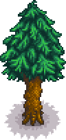
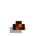
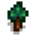

Kiefer
Zur Navigation springen
Zur Suche springen
| Kiefer | |
 | |
| Information | |
| Samen | |
| Zapfhahnerzeugnis | |
| Wachstumsdauer | Unterschiedlich |
Eine Kiefer ist eine Baumart in Stardew Valley. Sie wächst aus einem Kiefernzapfen, solange der Bereich im Radius von einem Block vom Baum frei bleibt. Ein richtig gepflanzter Kiefernzapfen hat jeden Tag eine Chance von ungefähr 20% in die nächste Stufe zu wachsen. Kiefern wachsen jedoch nicht im Winter. Die kürzeste Zeit zum auswaschsen beträgt 18 Tag, wobei 90% der Zapfen innerhalb von 32 Tagen auswachsen.
Wenn ein Baum, oder andere Gegenstände direkt angrenzen, wird eine Kiefer nicht in die finale Stufe wachsen, sondern bleibt bei Stufe 4. Wenn der Baum ausgewachsen ist, können Gegenstände neben ihm plaziert werden, ohne ihn dabei zu beeinflussen.
Wenn angezapft, produziert sie Kiefernteer.
Wachstum
| Stufe 1 | Stufe 2 | Stufe 3 | Stufe 4 | Stufe 5 - Frühling, Sommer, Herbst, Winter | Stumpf - Frühling, Sommer, Herbst, Winter |
|---|---|---|---|---|---|
 |
 |
 |
| Bäume | |
|---|---|
| Bäume | Ahornbaum • Eiche • Kiefer • Mahagonibaum • Palme |
| Obstbäume | Apfelbaum • Aprikosenbaum • Bananenbaum • Granatapfelbaum • Kirschbaum • Mangobaum • Orangenbaum • Pfirsichbaum |
| Samen | Ahornsamen • Eichel • Kiefernzapfen • Mahagoni-Samen • Pilzbaumsamen |
| Früchte | Apfel • Aprikose • Banane • Granatapfel • Kirsche • Mango • Orange • Pfirsich |
| Sonstige | Großer Baumstamm • Großer Baumstumpf • Pilzbaum • Teestrauch |